深夜の博多ポートタワーである。
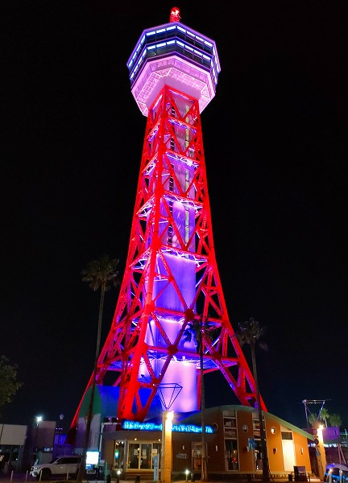
何故こんなところにいるのかといえば、今からフェリーに乗るのだ。
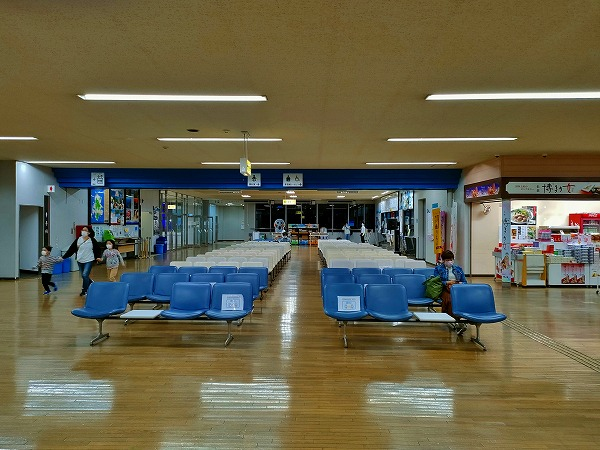
行き先は
対馬。
そう、日本と韓国の間に浮かぶ対馬である。
近年はゲーム「Ghost of Tsushima」で話題になった島である。
その島に何があるかというと…
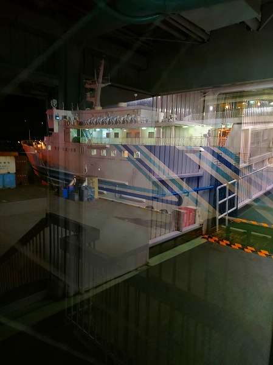
おっと！出航だ。
船は真っ暗な玄界灘をするすると進んでいく。
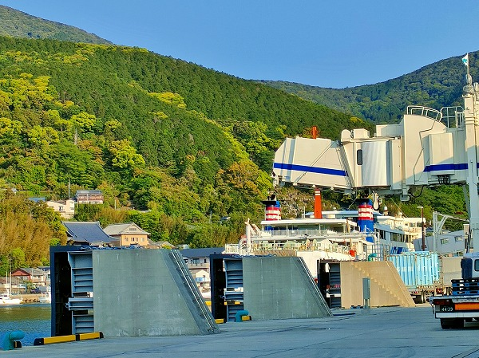
で、翌朝。
いい天気。
島の旅は天候が9割。この時点で勝利を確信した。何の勝利かは知らんが。
グッバイきずな丸。帰りもよろしく。
対馬とはこんな島だ。
南北に細長い島で、面積は佐渡、奄美大島に次ぐ
日本で三番目に大きな島である（沖縄本島、北方四島除く）。
スケール感としては南端から北端まで車で3時間程。
博多と釜山の中間に位置し、歴史的にも文化的にも地理的にも双方の影響を受けまくりの島なのだ。

古くから大陸の窓口だったが、現代でも韓国から多くの観光客が多く訪れ、離島とは思えない規模の免税店があったりする。
もっとも私が訪れた時期はコロナ禍の影響で対馬への国際便は運休しており、韓国人観光客は一人も見かけなかったが。
そんな対馬で私に課せられたミッションはというと…（自分が自分に勝手に課しているだけなのだが）
日本屈指の禁足地に足を踏み入れる
ことだ。
禁足地とは主に宗教的な理由で一般の人が入れないエリアの事である。
有名な事例としては奈良県の大神神社の三輪山、世界遺産にもなった福岡県の沖ノ島、沖縄県久高島のフボ―御嶽などが挙げられる。
詳しくはオカルト研究家の吉田悠軌氏の「禁足地の歩き方（学研プラス）」や「禁足地巡礼（扶桑社）」を読むといいよ。マジで面白いから。
ついでに言うと私がここの存在を知ったのは私と吉田氏の対談だった。
その模様は「
考える珍スポット（文芸社）」に掲載されているので、皆さん読むように(買ってね
♡）。
港で車を借りて島の南端辺りに移動する。
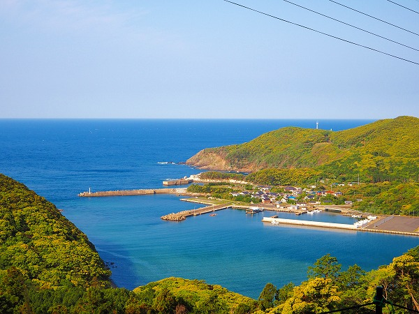
島のほぼ最南端である浅藻湾に着いた。
かつてはこの湾自体も聖域とみなされ、漁師も船でこの湾の沖を通る時はこの湾を見ないように
うつ伏せになって船を進めたという。
そんな浅藻湾の近くにある禁足地が今回の目的地、
オソロシドコロと呼ばれる
超聖域だ。
読んで字のごとく恐ろしい所、あるいは畏ろしい所の意味だ。
そこはどんなところかというと
天童法師なる人物の墓である
八丁郭があるのだ。
で、当然「天童法師って誰？」という事になりますよね？
やや長い話になるけど少しだけお付き合いくだされ。
…対馬では古くから
天道信仰というこの島独自の信仰があった。
これはお天道様の天道で、
朝鮮半島からの太陽信仰と日本の山岳信仰が混ざった信仰と言われている。
その天道信仰の中心人物が、この
天童法師。
天童法師は西暦683年生まれ。
母親が朝日に向かっておしっこしたところ、陽を浴びて妊娠しちゃったという
キリスト越えの仰天出生エピソードを持っている。
その後、奈良で仏教の修行をし、神通力を得て対馬に戻って来たという。
その後、時の天皇が病の際に対馬から空を飛んで奈良に馳せ参じ、病を治したという。
その褒美として法師が住むエリアの年貢が免除され、一種の治外法権になったという。
そんな天童法師の墓があるのがオソロシドコロなのだ。
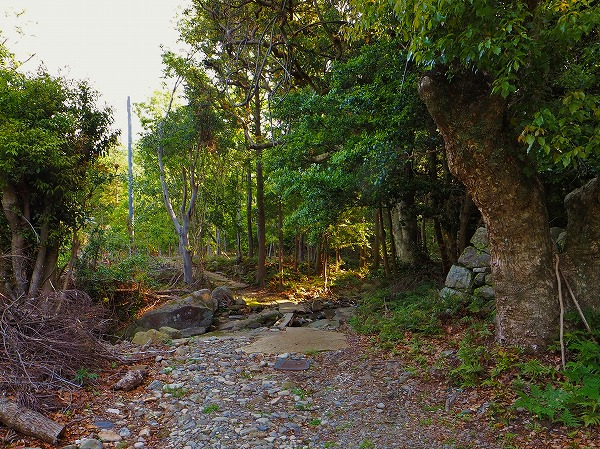
そんなオソロシドコロは
1300年の間禁足地とされてきた。
今でも地元の人は足を踏み入れることは決して無いという。
実際、浅藻で地元の人に道を聞いた際、「あそこに行くのか？」という顔をされた。
それだけ立ち入る事が強烈にタブー視されている場所なのだ。
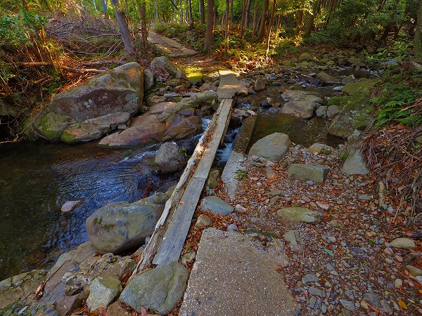
舗装道が途切れたので、車を置き、細い一本橋を渡る。
かつては犯罪者が逃げ込んでも警官が追ってこない、一種のアジール的な場所だったという。
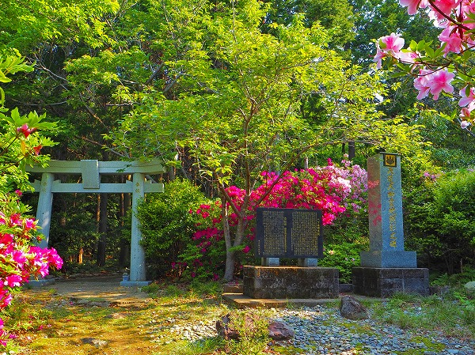
山の中の道を歩いて行くと鳥居が見えてくる。
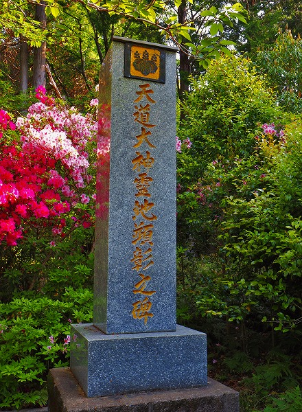
傍らには石碑が。
オソロシドコロという割には玄海ツツジが咲き誇る桃源郷のような風情だ。
しかし油断してはならない。
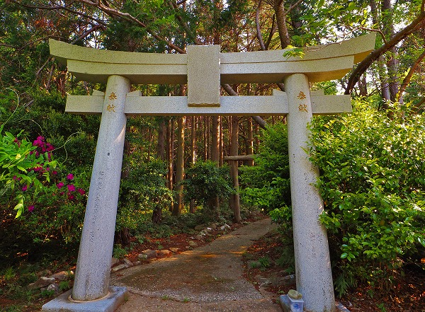
この石鳥居から先が聖域、つまり禁足地となる。
ここで、オソロシドコロにまつわる禁忌について話しておかねばなるまい。
この聖域は長年禁足地であった事は先程も述べた。
現在はその禁足も解けたとはいえ、それは単に天道信仰を信仰する人が減ったため、なし崩し的に一般の人が入れるようになっただけなのだ。
従って、今でも
この聖域において禁忌は確実に存在する。
それは
1.入域する際は塩を撒いて清めねばならない。
2.転んではいけない。
3.大声を出してはならない。
4.草木を伐採してはならない。
5.いかなる物も持ち帰ってはならない。自分の物でも落としたら持ち帰ってはならない。
6.天童法師の墓（八丁郭という）では靴を脱がなければならない。
7.天童法師の墓には決して尻を向けてはならない。去る時も後ずさりしなければならない。
…というもの。
さすがに最近まで禁足地だっただけあって細かいルールが多い。
禁足が解けたとはいえ、それだけ人々の間では畏れられている存在なのだろう。
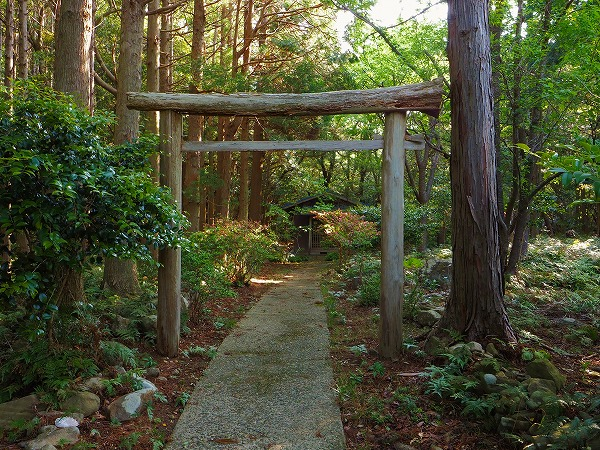
以上の禁忌を破ったものは吉田氏曰く「あー、死にますねー」、との事。
一応、対処策もあって、例えば転んだときは自分の身代りに片袖をちぎってその場に置いていくとか、
うっかりお尻を向けたり間違って入ってしまった場合は自分の履物を頭に載せて「いんのこ、いんのこ」と言ってその場を去るとか。
「いんのこ」とは犬の子供の事。つまり自分は人間じゃないですよ的アピールをすれば助かる、という事らしい。
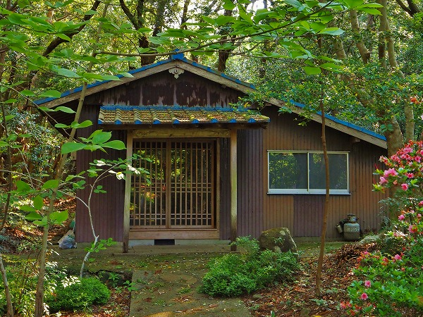
私としてはまだ死にたくないので、この禁忌を頭に叩き込んで先に進む。
社務所的な建物が見えてきた。
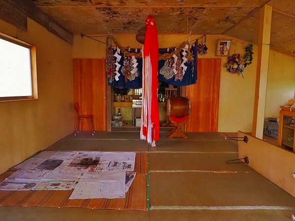
中を覗くと、何らかの神事が行われる場所のようだ。
天井が所々汚れており、床に新聞紙が敷かれていた。
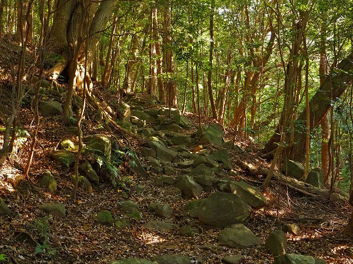
建物の左手を周り、先に進む。
ここから先は本当の本当に聖域なので
転ぶ事は赦されない。
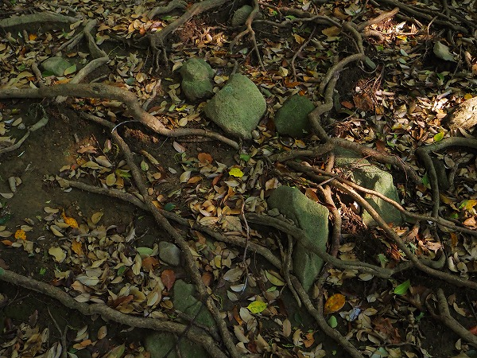
とはいえ、木の根っこがあちこちに張っていて、石も多い。
トラップだらけなのだ。油断できない。
何といっても転んだら死ぬので。
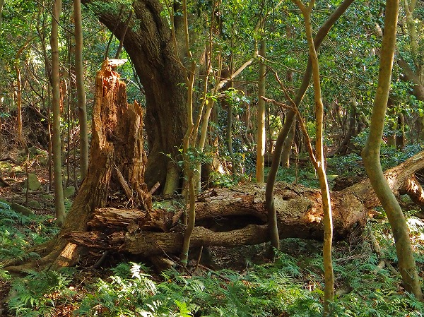
あちこちに倒木が。
手を入れない原生林とは美しいばかりではないのだ。
朽ちて倒れる木までもが放置されている。それが禁足地の現実だ。
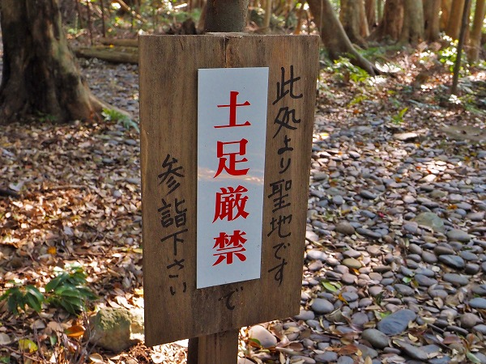
しばらく森の中を歩くと看板が現れる。
おおお、ここからが
聖域オブ聖域なのだ！
もちろん靴を脱いで素足になる。
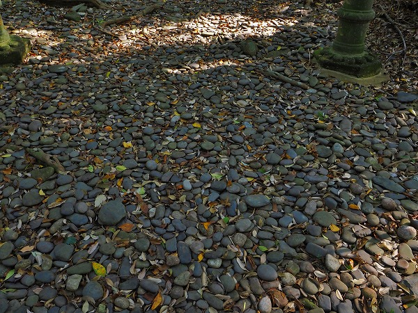
最初チョット怯んだが、平たい玉石が敷き詰めてあるので足が痛いという事はなかった。
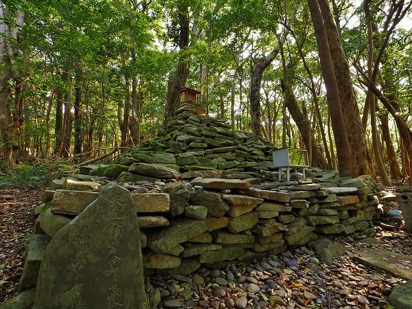
そしていよいよ
八丁郭が姿を現す。
八丁郭、つまり天童法師の墓（塚？）は石が積み上げられたピラミッド状の石墳だ。
一説では天道法師は死んでおらず今でもこの石墳の中で修行を続けていると信じられているとか。
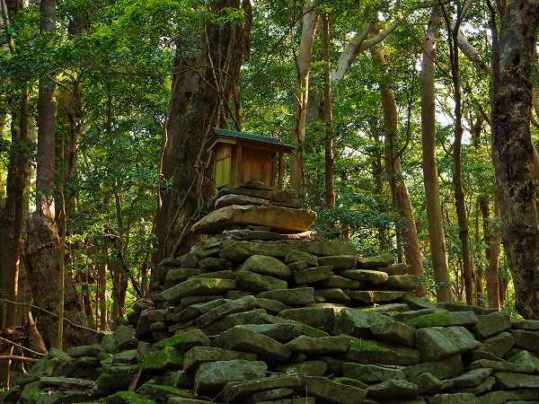
頂上には小さな祠があった。
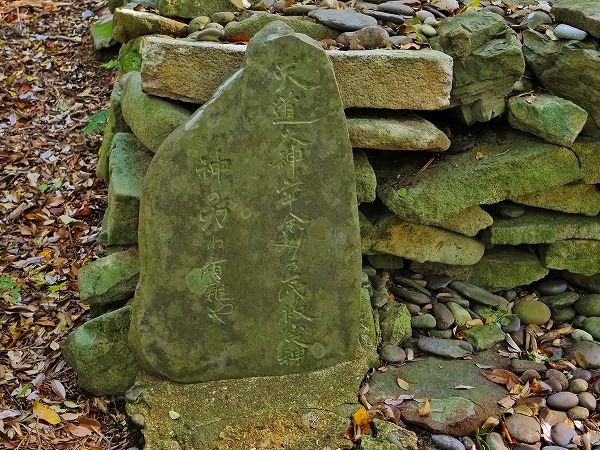
傍らにあった石碑。
それにしてもこの張り詰めた空気感はどうだ。
何も知らなければ普通の原生林なのだろうが、全身をバシバシ叩かれているような緊張感に満ちた空間だった。
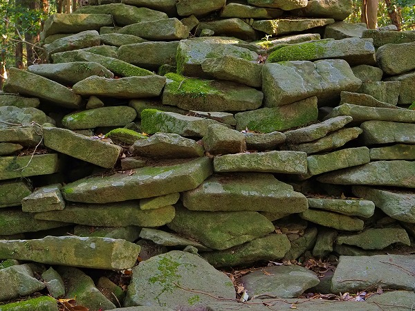
石墳を構成する石はみな平らな自然石だった。
もちろんこの森の中にはない形状の石だ。
という事は海から拾ってきたのだろうか？
それはそれで物凄い労力だ。
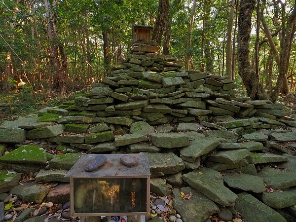
この石墳の中で修行を続けているという天道法師。
そんな天道法師目線で見たらここの光景はどんな風に見えるのだろうと振り返って見た。
そこにはただただ原生林が広がっていた。
ん？
あれれれれれ？
今…
俺…
振り返っちゃった。…よね？
あ゛あ゛あ゛あ゛あ゛あ゛あ゛ーーーーーーーーーっ！
最もやってはいけない
7.天童法師の墓には決して尻を向けてはならないという禁忌を犯してしまった！！！！
えーっと、その時はどうするんだっけ？
ああ、そうだ！
靴を頭の上に載せて「いんのこ、いんのこ」と言うんだっけ。
慌てて後ずさりしつつ、脱いだ靴を頭に載せ、
「いんのこ、いんのこ」と唱える。
やっべー。
危うく死ぬところだったわー。
この対処法を教えてくれた吉田さん、ありがとう。ユーは命の恩人だよ！
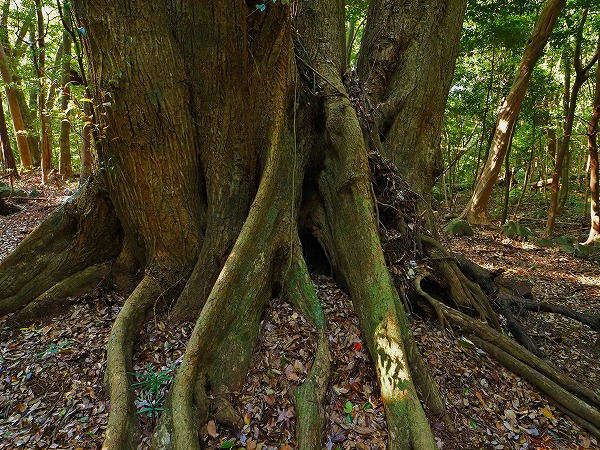
てなわけでオソロシドコロを何とか離脱。
お陰様で祟りもなく、今現在まで健康に過ごしております。
この後、訪れたオープンしたての対馬博物館に気になる展示があった。
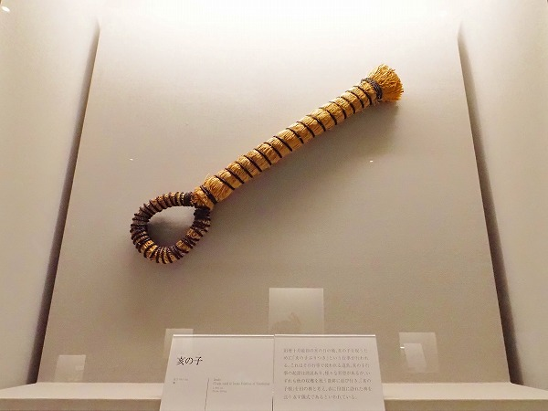
亥の子（いのこ）という。
対馬各地で行われる
亥の子ぶりつきという祭りに使用される物だという。
詳しい使用法は記されていなかったが、祭り自体は槌に複数の縄を付け、子供たちがそれを使って土固めをして大人から小遣いや菓子を貰うというもの。
秋の収穫を祝う祭りで、春に田畑に訪れた亥の子という神様を送り返す儀式だと言われている。
山から田に来てまた山に帰る。
田の神にそっくりだ。
あれ？ひょっとして「いんのこいんのこ」、という呪文は犬の子ではなく亥の子のことなのではなかろうか…。
大いなる疑問を残しつつ、私は今日まで元気に過ごしております！
…てなわけでもうひとつの天道信仰の現場に行ってみます。
対馬後編に続く